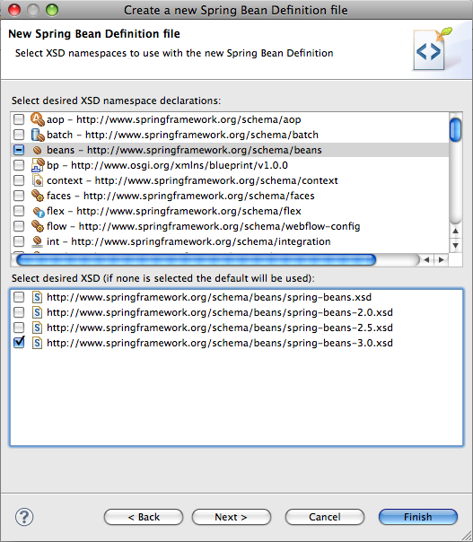
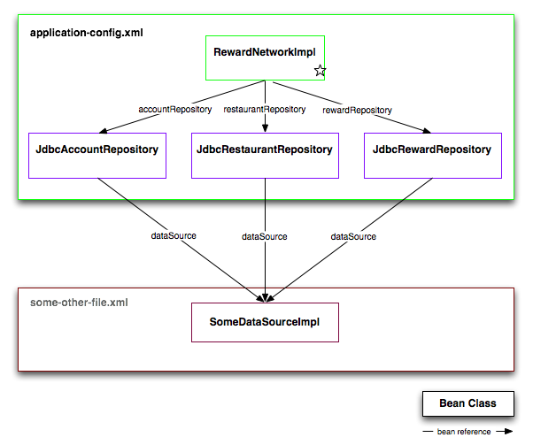
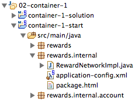
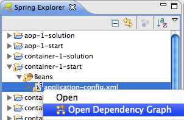
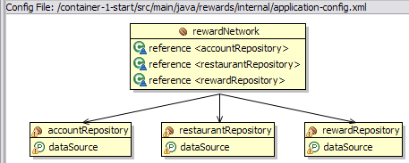
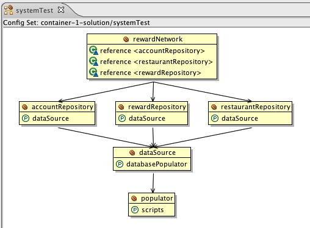
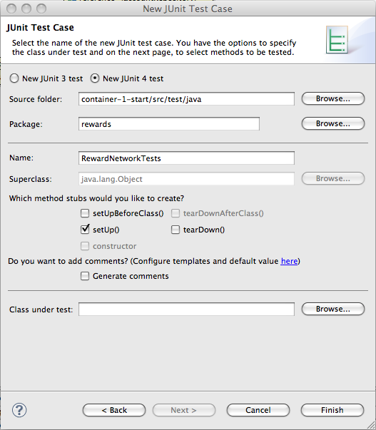

In this lab you will gain experience using Spring to configure the completed rewards application. You'll use Spring to configure the pieces of the application, then run a top-down system test to verify application behavior.
What you will learn:
The big picture: how Spring "fits" into the architecture of a typical Enterprise Java application
How to use Spring to configure plain Java objects (POJOs)
How to organize Spring configuration files effectively
How to create a Spring
ApplicationContext and get a bean from
it
How to use SpringSource Tool Suite to visualize your application's configuration
How Spring combined with modern development tools facilitates a test-driven development process
Specific subjects you will gain experience with:
Constructor dependency injection
Setter dependency injection
Spring XML configuration syntax
Spring 3.0 embedded database support
SpringSource Tool Suite
Factory Beans
Estimated time to complete: 45 minutes
Instructions for this lab are divided into two sections. In the first section, you'll use Spring to configure the pieces of the rewards application. In the second section, you'll run a system test to verify all the pieces work together to carry out application behavior successfully. Have fun!
So far you've coded your RewardNetworkImpl,
the central piece of this reward application. You've unit tested it and
verified it works in isolation with dummy (stub) repositories. Now it is
time to tie all the real pieces of the application
together, integrating your code with supporting services that have been
provided for you. In the following steps you'll use Spring to configure
the complete rewards application from its parts. This includes plugging
in repository implementations that use a JDBC data source to access a
relational database!
Below is a configuration diagram showing the parts of the rewards application you will configure and how they should be wired together:
 |
Figure 1: The rewards application configuration diagram
Figure 1 shows the configuration split into two categories: Application Configuration and Infrastructure Configuration. The components in the Application Configuration box are written by you and makeup the application logic. The components in the Infrastructure Configuration box are not written by you and are lower-level services used by the application. In the next few steps you'll focus on the application configuration piece. You'll define the infrastructure piece later.
In your project, you'll find your familiar
RewardNetworkImpl in the
rewards.internal package. You'll find each JDBC-based
repository implementation it needs located within the domain packages
inside the rewards.internal package. Each
repository uses the JDBC API to execute SQL statements against a
DataSource that is part of the
application infrastructure. The
DataSource implementation you will use is
not important at this time but will become important later.
Spring configuration information is typically externalized from Java code, partitioned across one or more XML files. In this step you'll create a single XML file that tells Spring how to configure your application components. You'll then validate your configuration visually using SpringSource Tool Suite's graphical visualizer.
Under the src/main/java folder, right-click
the rewards.internal package and select
New -> Spring Bean Configuration File. Use
application-config.xml as the file name to
indicate this is where your application configuration will reside.
Leave the 'Add Spring project nature if required' checkbox checked and
click Next.
In the next screen, note that by clicking on the 'beans' namespace, you can select XSD files for different version of Spring. The default is 3.0 so you can either choose that explicitly or leave it unchecked. After that, click Finish.
|  |
Figure 2: XSD selection
Now, in application-config.xml create the
configuration illustrated in the 'application-config.xml' box
below:
|  |
Figure 3: Application configuration
In Figure 3, the colored rectangular boxes represent bean
definitions, and the labeled arrows between them represent bean
references. The entire configuration is shown split out across two
files, application-config.xml and
some-other-file.xml. This is because it is
generally a best-practice to separate application and infrastructure
configuration, as infrastructure typically varies across environments.
For example, in a test environment you might use a simple, in-memory
data source, but in production you'll use a shared connection pool
talking to a database server. By putting your infrastructure in
another file, you can change it without effecting your application
configuration.
Don't worry about the infrastructure configuration for now.
Simply define four beans in your
application-config.xml file to reflect the
configuration in the 'application-config.xml' box of Figure 3. It's
okay to assume the dataSource bean
referenced by each repository is defined in another file: you'll see
how to combine and visualize beans partitioned across multiple files
in a later step. For consistency with the rest of the lab, give your
RewardNetworkImpl bean an id of
rewardNetwork.
![[Tip]](images/tip.png) | Define each bean, then define the references between beans |
|---|---|
As you start working in
|
| Follow bean naming conventions |
|---|---|
As you define each bean, follow bean naming conventions. The arrows in Figure 3 representing bean references follow the recommended naming convention. A bean's name should describe the service
it provides callers. It should not describe implementation details.
For this reason, a bean's name often corresponds to its
service interface. For example, the class
|
| Use Eclipse XML auto-completion |
|---|---|
As you define each bean, have Eclipse auto-suggest XML tags
for you. Press |
| Use bean class name auto-completion |
|---|---|
As you define each bean, have SpringSource Tool Suite auto-complete the bean's class
name for you. When you add a |
| Use constructor-arg auto-completion |
|---|---|
For beans with constructor arguments, have SpringSource Tool
Suite auto-complete
constructor-args for you. When you add a
|
| Use property auto-completion |
|---|---|
For beans with settable properties, have SpringSource Tool
Suite auto-complete
properties for you. When you add a
|
Once you have the four beans defined and referenced as shown in Figure 3, move on to the next step!
So you defined your four beans in
application-config.xml. How can you verify you
defined them correctly? One way is to use SpringSource Tool Suite to
visualize your configuration. In this next step you'll use
SpringSource Tool Suite to graph the beans in your
application-config.xml.
To enable SpringSource Tool Suite graphing, you must tell Eclipse your project is a SpringSource Tool Suite project. In your case that was done automatically when you added the Spring Bean Configuration File, otherwise you can add the Spring project nature through the Spring Tools context menu of your project.
You'll see your project's icon now has a "S" annotation indicating it's a SpringSource Tool Suite project:
|  |
Figure 4: container-1-start is a
Spring project
SpringSource Tool Suite also needs to know about your bean
definition files. Again, this was done automatically when you used the
wizard to add the new configuration file. To do this manually for
files that were not created with the wizard, you can right-click your
container-1-start project, select
Properties, and navigate to the Spring
-> Beans Support tab.
With the file added, now tell SpringSource Tool Suite to
visualize it. In the Spring Explorer view, expand
the container-1-start project, right-click on
application-config.xml and select Open
Graph.
|  |
Figure 5: Open Dependency Graph
The resulting graph should look like:
|  |
Figure 6: application-config.xml
visualized with SpringSource Tool Suite
When you see the equivalent of Figure 6 in your graph of
application-config.xml, move on to the next step!
If you see something different, head back to your configuration to
find the issue. When you make a change to your configuration, refresh
your graph.
In the previous step you created and visualized bean definitions for your application components. In this step you'll create the infrastructure configuration necessary to test your application. You'll then visualize the entire test configuration.
What's left to be able to test your application? Recall each
JDBC-based repository needs a
DataSource to work. For example, the
JdbcRestaurantRepository needs a
DataSource to load
Restaurant objects by their merchant numbers
from rows in the T_RESTAURANT table. So far,
though, you have not defined any
DataSource implementation (you can see
this graphically in Figure 6 as the 'dataSource' references are
dangling). In this step you'll define the
DataSource in a separate configuration
file in your test tree.
In the src/test/java source folder,
navigate to the root rewards package. There you
will find a file named
test-infrastructure-config.xml. Open it.
You'll see a TODO asking you to complete a
coding task. This is where you will define the
DataSource your application uses to
acquire database connections in a test environment.
What DataSource implementation
should you use? You want something simple that lets you quickly test
your application inside Eclipse. You also need to ensure your database
is created and populated with test data before
your application is initialized. Otherwise your tests would fail as
there would be no data to test against.
Spring 3.0 ships with decent support for creating
DataSources based on in-memory
databases such as H2, HSQLDB and Derby. So the class you need
to configure is EmbeddedDatabaseFactoryBean
residing in
org.springframework.jdbc.datasource.embedded
package. Make sure you give the bean the id
dataSource.
As we need to populate the
DataSource with test data before we can
run actual tests against them, we also need to configure a
ResourceDatabasePopulator from the
org.springframework.jdbc.datasource.init package.
You should configure its scripts property to receive
schema.sql as well as
test-data.sql. The list element is probably
really helpful here.
Both of these files can be loaded as scripts and both are on the
classpath, so you can use Spring's resource loading mechanism and
prefix both of the paths with classpath:. Note that
the scripts will be run in the order specified (top to bottom) so the
order matters in this case. Remember too that the root of the
classpath is the parent directory of the /rewards
directory, so you will need to configure the paths to the scripts with
this in mind.
If you have configured the populator you can then wire it to the
databasePopulator property of your EmbeddedDatabaseFactoryBean. Once
you have the dataSource and populator
bean defined in test-infrastructure-config.xml
with the correct scripts, move on to the next step!
So far you've defined the configuration for your application and the infrastructure necessary to system test your application. In this step you'll use SpringSource Tool Suite to visualize your complete system test configuration across the two files.
Right-click on your container-1-start project
and select Properties. Select the Spring
-> Beans Support tab and Add... your
test-infrastructure-config.xml to the Config
Files list.
Now group the two files together into a logical 'systemTest' Config Set. To do this, select the Config Sets tab and select New... In the dialog, enter the Config Set name, select the config files to include, and select OK:
 |
Figure 10: New Config Set
Now graph your new 'systemTest' Config Set. In your Spring Explorer view, right-click on the set and select Open Graph. Your graph should look like:
|  |
Figure 11: The rewards application - system test configuration
Notice how the dataSource bean is now part of
the graph, as the graph is now visualizing the combined configuration
across the application-config.xml and
test-infrastructure-config.xml files.
![[Note]](images/note.png) | Note |
|---|---|
It's possible that you still see warning or even error overlays in the icons shown in the diagram. This is caused by a bug in the Eclipse icon cache and does not mean that you did something wrong! As long as there are no warnings or errors in your config files you're fine. |
When you see the equivalent of Figure 11 in your graph of
application-config.xml, move on to the next
step!
In this final section you will test your rewards application with
Spring and JUnit. You'll first implement the test setup logic to create
a Spring ApplicationContext that
bootstraps your application. Then you'll implement the test logic to
exercise and verify application behavior.
Start by creating a new JUnit Test Case called
RewardNetworkTests in the
rewards package inside the
src/test/java source folder. Use the New
-> Other -> Java -> JUnit Test Case wizard to help
you (note that you might need to change the version of JUnit that will
be used to 4):
|  |
Figure 12: Creating the RewardNetworkTests TestCase using the JUnit Test Case wizard
Once you have your RewardNetworkTests
class created, move on to the next step!
In this step you'll implement the setup logic needed to run your
system test. You'll first create a Spring
ApplicationContext that bootstraps your
application, then lookup the bean you'll use to invoke the
application.
First, ensure you have a public void
setUp() method annotated with
@org.junit.Before. (this is done for
you when you checked the setUp() checkbox in
wizard.)
Within setUp(), create a new
ClassPathXmlApplicationContext,
providing it the class paths to your
application-config.xml and
test-infrastructure-config.xml files. Doing this
will bootstrap your application by having Spring create, configure,
and assemble all beans defined in those two files.
Next, ask the context to get the
rewardNetwork bean for you, which represents the
entry-point into the rewards application. Assign the bean to a private
field of type RewardNetwork you can
reference from your test methods.
| Tip |
|---|---|
Be sure to assign the reference to the
|
| Tip |
|---|---|
Don't ask the context for beans "internal" to the application.
The |
Now verify that Spring can successfully create your application
on test setUp. To do this, create a public
void test method called testRewardForDining()
and annotate it with @org.junit.Test.
Leave the method body blank for now. Then, run your test class by
selecting it and accessing Run -> Run As -> JUnit
Test from the menu bar (you may also use the Alt
+ Shift + X then T shortcut to do this). After your test
runs, you should see the green bar indicating
setUp ran without throwing any exceptions. If
you see red, inspect the failure trace in the JUnit view to see what
went wrong in the setup logic. Carefully inspect the stack trace-
Spring error messages are usually very detailed in describing what
went wrong.
Once you have the green bar, move on to the next step!
With the test setup logic implemented, you're ready to test your
application. In this step, you'll invoke the
RewardNetwork.rewardAccountFor(Dining)
method to verify all pieces of your application work together to carry
out a successful reward operation.
You will not have to write the Unit Test yourself. Have a look at RewardNetworkImplTest.testRewardForDining(). You can just copy and paste its content into RewardNetworkTest.testRewardForDining().
| Tip |
|---|---|
In a real life application you would not have the same content for both tests. We are making things fast here so you can focus on Spring configuration rather than spending time on writing the test itself. |
You can now run your test in Eclipse. This time you may simply select the green play button on the tool bar to Run Last Launched (Ctrl+F11).
When you have the green bar, congratulations! You've completed this lab. You have just used Spring to configure the components of a realistic Java application and have exercised application behavior successfully in a test environment inside your IDE.